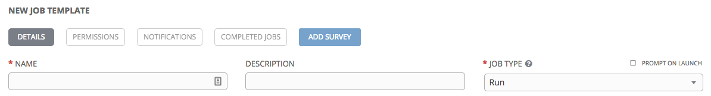

Job Templates and Workflows in Ansible Tower
NAME HERE, TITLE HERE
COMPANY HERE
General Ansible Tower Setup
You will need:- Inventory
- A project to select a playbook from
- Up-to-date credentials
What is a Job Template?
- A definition and set of parameters for running an Ansible playbook
- In Ansible Tower, they are a visual realization of the ansible-playbook command and all flags you can utilize when executing from the command line.
- It defines the combination of a playbook from a project, an inventory, a credential and any other Ansible parameters required to run.
Before You Start
Whether you're invoking an inventory file or setting tags, you will
be adding arguments as part of the job template.
It's recommended to know, before you start:
- How to connect to the machine (credentials)
- What you want to change on the machine (project/playbook)
Creating a Job Template
- Select Templates from the top of the screen:
- Navigate to the "Add" drop-down box and select Job Template.
Naming and Job Type

- Name the job template anything you like
- Descriptions are optional
- Select either "Check" or "Run" for Job Type: Check performs a “dry run” of the playbook
Run will execute the tasks in the playbook on the selected hosts
Inventory, Project, and Playbook Selection

- There is a “prompt on launch” option for the Inventory selection; users can alternatively invoke a more complex selection prompt at the beginning of a job using a Survey
- The Project option determines which playbooks can be selected
- Tower will not display the full file name of playbooks (e.g., AWS.yml will display as AWS)
Credentials, Forks, Limits

- Choose the credential from the available options to be used with this job template
- Forks are the number of parallel or simultaneous processes to use while executing the playbook; a value of zero uses the Ansible default setting, which is five parallel processes unless overridden in /etc/ansible/ansible.cfg
- The Limit option provides a host pattern to further constrain the list of hosts that will be managed or affected by the playbook; multiple patterns are allowed
Verbosity, Instance Groups, Job Tags

- Verbosity controls the level of output Ansible will produce as the playbook executes
- Users can optionally select which Instance Groups the job template will run on
- Job tags are useful when you have a large playbook and want to run a specific part of a play or task; this option provides a comma-separated list of playbook tags to specify what parts of the playbooks should be executed
Skip Tags, Labels, Show Changes
- Skip Tags is a useful option when you have a large playbook and want to skip specific parts of a play or task
- Labels are optional and can be used to describe the job template, i.e., "test" or "dev"
- When Show Changes is on, users can see changes made by Ansible tasks
Other Options
- Enable Privilege Escalation: Enable this to run the playbook as an administrator
- Allow Provisioning Callbacks: Enables a host to call back to Tower via the Tower API and launch a job from this job template
- Enable Concurrent Jobs: Allows simultaneous runs of this particular job template
- Use Fact Cache: When enabled, this activates an Ansible fact cache plugin for all hosts in an inventory related to the job running
Job Template Example

Demo Time:
[Optional slide; can show in Tower]
See how it works?
You can put sections inside of sections. (to remove the red just remove the data state)
You can make it simple...

...or complex!
For More Information
Official Ansible Documentation:
https://docs.ansible.com/ansible-tower/latest/html/userguide/job_templates.html
Blog Post:
https://www.ansible.com/blog/getting-started-setting-up-an-ansible-job-template